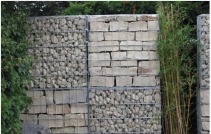
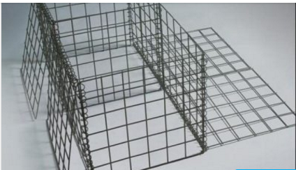
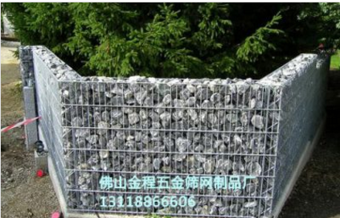
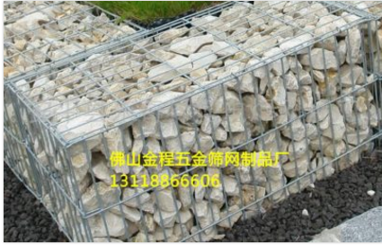
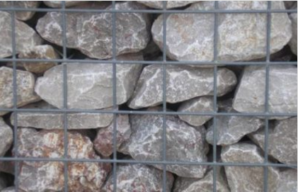
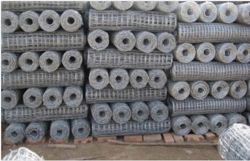
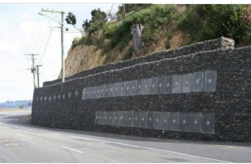

广州电焊网批发厂家
wj666导读：本篇文章为您介绍了广州电焊网批发厂家的信息，通过浏览本页面您可以更好的了解广州电焊网批发厂家。
佛山市南海区大沥盐步金程五金筛网制品厂是一家集生产、深加工、销售于一体的丝网生产专业企业。借助于得天独厚的环境优势和广大同仁的支持与帮助，加上全体员工的奋发努力，使我公司迅速发展成为一个技术力量雄厚、丝网经验丰富、检测手段齐全、可生产多种丝网产品的企业。专业电焊石笼网得安装、电焊石笼网得生产厂家、好得电焊石笼网批发，金程五金为您一条龙服务，一个电话上门安装，实地考察。给您质量的保证。热线咨询：联系电话(微信同号)：18934371334(业务:马小姐)；18664220999(业务:尤小姐)；13118866606(总经理:杜先生)。

电焊石笼网：产品功能：美化环境，用作用作挡土墙、城市景观和公园景观，防护高速公路，边坡，大桥，地动或土壤沙化等的加固、斜坡保护、治河、海岸保护、水库、运河和管道整修、岩石破裂防护、桥梁保护等防护用网。

景观用石笼网在建筑行业的应用也很广泛。顾称为建筑网，建筑网片，也因景观用石笼网可做美化用又称为装饰网片
景观用石笼网顾名思义就是石笼网在园林景观，园林绿化中的应用。也就是起到美化，装饰的作用。
景观用石笼网分为：六角石笼网，勾花石笼网，电焊石笼网，五拧石笼网，三拧石笼网，不锈钢石笼网，镀锌石笼网，pvc石笼网等。
景观用石笼网的应用：
1.环境美化、用作挡土墙、城市景观和公园景观等。景观用石笼网可用石笼网装满石子，围成花池，在花池中种满花草，即成了景观石笼网。也可砌成挡土墙，衬托出一种古朴，典雅的气息。即起到了防护作用，又起到了美化作用。在公园，花园，游乐场所景观用石笼网是最为常见的。
2.在含盐或高污染环境中，可采用高尔凡工艺电焊石笼网。
3.在电焊石笼网内装填块石或天然鹅卵石一起来防护高速公路、边坡、井巷、大桥等。
4.电焊石笼网广泛用于地动或土壤沙化等的加固、斜坡保护、治河、海岸保护、水库、运河和管道整修、岩石破裂防护、桥梁保护等防护用网。
5.景观用石笼网在建筑行业的应用也很广泛。顾称为建筑网，建筑网片，也因景观用石笼网可做美化用又称为装饰网片。

锌铝石笼网
产品功能：本产品常用于高速公路、铁路护栏、边坡防护、边坡绿化、山体沿面、挂网喷浆、井巷防护、建筑、养殖用网等
石笼网箱（也称重型六角网、拧花网、格宾网、三绞节机编网）是金属线材编织的角形网(六角网)制成的网箱，使用的金属线径是根据六角形的大小而不同。
锌铝石笼网
10%和5%锌铝石笼网与普通的镀锌石笼网相比，其涂层具有粘附性强，耐磨性和抗腐蚀性更好，施工性能优越等特点。锌铝合金涂层具有和喷铝层类似的稳定性，又具有和喷锌层类似的电化学保护性，是一种较为理想的抗海水腐蚀的保护层。锌铝合金丝用于编织石笼网，其使用寿命可延长5-10倍。

热镀10%锌铝石笼网，热镀5%锌铝石笼（又称锌10铝石笼网，格宾网，或者锌5铝石笼网）由各种规格的10%（或5%）铝锌合金低碳钢丝编织而成。工程现场填充石料组装形成柔性的、透水的、整体的支挡结构，用于生态防护工程。石笼网丝采用高镀锌钢丝或者10%锌铝合金钢丝、5%铝锌合金低碳钢丝制作而成，如果环境条件比较恶劣，污染比较严重，可以在钢丝的表面涂塑（PVC），以增强网丝的抗腐蚀性能。
我国使用石笼防护是近几年的事情，而国外早就对石笼做过研究，发现，石笼的使用年限，主要取决于钢丝的寿命。在国际上，大多数使用高镀锌钢丝或铝锌合金钢丝。 锌-10%铝-稀土合金镀层是近年来国际上新兴的，用来替代传统的纯锌镀层的新型镀层。其主要应用于日本热闹市场。 实验证明其耐腐蚀性是传统纯镀锌镀层的3倍以上，因而日益受到广泛的重视，并在不段的推广，现在欧美发达国家正用锌铝合金替代传统的纯镀锌层。 使用锌铝合金钢丝编织成的网状矩型箱体，其使用寿命在70-80年左右是普通镀锌层钢丝的2倍。 锌铝合金钢丝符合国家标准：GB/T 20492-2006
铁丝石笼网
产品功能：铁丝网厂生产的石笼网，网幅宽，丝径粗，不易腐蚀寿命长。广泛用于监狱、看守所的防固围墙，饲养鸡、鸭、鹅、兔及动物的围栏。机械设备的防护，高速公路护栏，体育场所围网，山体岩面防塌方挂网，山体边坡（殖被）绿化网，马路绿化带防护网。该丝网在制作成箱子状的容器后，用乱石等填满网箱，可用于保护和支持海堤、山坡、路桥、水库及其他土木工程。是防洪和抗洪上好材料。
石笼网由高抗腐蚀、高强度、具有延展性的低碳钢丝或者包覆PVC的以上钢丝使用机械编织而成，使用该网制作而成的箱型结构就是石笼。根据ASTM和EN标准，所使用的低碳钢丝直径根据工程设计要求而不同。

铁丝石笼网
(1)经济。只需将石头装入笼子封口即可。
(2)施工简便，不需特殊技术。
(3)有很强的抵御自然破坏及耐腐蚀和抗恶劣气候影响的能力。
(4)可以承受大范围的变形，而仍不坍塌。
(5)笼子石头缝隙间的淤泥有利于植物生产，可与周围自然环境熔为一体。
(6)具有良好的渗透性，可防止由流体静力造成的损害。
(7)节约运输费用。可将其折叠起来运输，在工地上装配
石笼网由高抗腐蚀、高强度、具有延展性的低碳钢丝或者包覆PVC的以上钢丝使用机械编织而成，使用该网制作而成的箱型结构就是石笼。根据ASTM和EN标准，所使用的低碳钢丝直径根据工程设计要求而不同。一般介于2.0-4.0mm之间，石笼网钢丝的抗拉强度不少于38kg/m2，金属镀层重量一般高于245g/m2，石笼网片的边缘线直径一般要大于网线直径。其双线绞合部分的长度不得小于50mm.以保证绞合部分钢丝的金属镀层和PVC镀层不受破坏。
石笼网可用于边坡支护、基坑支护、山体岩面挂网喷浆、边坡植生（绿化）、铁路高速公路隔离护拦网，它还能制成箱笼、网垫，用于江河、堤坝及海塘的防冲刷保护，水库、河流截流用网箱。河流最严重的灾害是水流冲刷河岸使其破坏，引发的洪水泛滥，导致生命财产遭受大量损失和大量水土流失。因此在处理上述问题时侯，格该生态格网结构的应用成为最佳的解决方案之一，它能使河床河岸得到永久性保护。
1、柔性的结构能适应边坡的变动而不被破坏，比刚性结构具备更好地安全稳定性；
2、抗冲刷能力较强，能承受最大的水流速度可达6m/s；
3、该结构本质上都具有透水性，对地下水自然作用及过滤作用具有较强的包容性，水中的悬移物和淤泥得以沉淀于填石缝中，从而有利于自然植物的生长，逐步恢复原有的生态环境。

石笼网是使填石固定就位的铁丝或聚合物丝网格式制作物。铁丝笼是由铁丝编织的网格或焊接而成的结构物。这两种结构可以是电镀的，编织的铁丝箱可另外涂上PVC。用抗风化坚硬石块作填料，它在石箱或石笼沉排中不会因磨蚀而很快破碎。装有不同类型的块石的石笼有不同的特性。多角的块石能相互很好地联锁在一起，用其填装的石笼不易变形。
在园林景观工程中，公路护坡、堤坝护岸以及山体陡坡复绿一直是工程技术人员头疼的难题。多年来，他们一直在探索一种工艺，既能满足山体、岸滩稳定的防护要求，又能达到绿化环境的效果，同时还经济便捷。渐渐的，这种工艺开始浮出水面，它就是生态石笼网应用工艺。
生态石笼网应用工艺是用高强度镀锌钢丝编织成不同规格的矩形笼子，笼子内充填石头的结构。这种结构应用到岸坡防护后，在人为和自然因素的双重作用下，石块之间的缝隙不断被泥土充填。植物种子逐渐在石块之间的泥土中生根发芽，茁壮生长，根系牢牢固定石块和泥土。如此即可以对边坡实现防护和绿化的目的，改善生态、保持水土的效果也十分显著。
生态石笼网箱工艺具有四个方面的优势：
一是施工简便，生态石笼网箱工艺只需将石头装入笼子中封口即可，不需要特殊技术，也不需要水电。
二是费用低廉，生态石笼网箱每平方米造价只需15元。
三是景观和防护效果好。生态石笼网箱工艺采用的工程措施和植物措施相结合的方式，能有效防止水土流失，景观见效快，景观效果更自然、更丰富。
四是使用寿命长，生态石笼网箱工艺寿命长达几十年，且一般不用维修。正是因为这一点，长江黄石段护堤工程、太湖防汛大堤防护工程、三峡三斗坪护岸工程等都采用了这一工艺

佛山市南海区大沥盐步金程五金筛网制品厂是一家集生产、深加工、销售于一体的丝网生产专业企业。借助于得天独厚的环境优势和广大同仁的支持与帮助，加上全体员工的奋发努力，使我公司迅速发展成为一个技术力量雄厚、丝网经验丰富、检测手段齐全、可生产多种丝网产品的企业。专业电焊石笼网得安装、电焊石笼网得生产厂家、好得电焊石笼网批发，金程五金为您一条龙服务，一个电话上门安装，实地考察。给您质量的保证。热线咨询：联系电话(微信同号)：18934371334(业务:马小姐)；18664220999(业务:尤小姐)；13118866606(总经理:杜先生)。
以上是关于广州电焊网批发厂家的介绍，更多相关信息，请咨询在线客服。